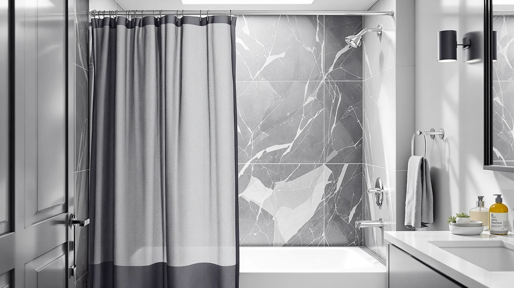

Recommend the Best Shower Curtains Made of Mold Resistant Materials (2026)
Prices and picks verified as of September 2026. Independent, reader-supported reviews.


Quick Answer
We compared shower curtains made of mold resistant materials from Amazon Basics, GORILLA GRIP, Biscaynebay, and Titanker on fabric, price, and verified owner reviews to find picks that shrug off bathroom humidity. The Amazon Basics Bathroom Shower Curtain wins for most bathrooms: a polyester and PEVA blend, a 72 by 72 inch fit, and a 4.6-star rating across 45,448 reviews at $9.38.
Our pick: Amazon Basics Bathroom Shower Curtain, $9.38 Check Price on Amazon
Bottom line: our top pick is the Amazon Basics Bathroom Shower Curtain at $8.99. The best budget option is the Titanker Shower Curtain Hooks Rings Rust Resistant Metal at $6.99.
Things to Know Before You Buy
- PEVA resists mold better than porous fabric. Every curtain in this guide to the best shower curtains made of mold resistant materials uses a polyester and PEVA blend rather than pure cotton or linen, because PEVA does not absorb water the way woven fabric does. That leaves less moisture behind for mildew to grow on.
- Polyester alone is not automatically mold resistant. The PEVA layer is what blocks water; a curtain woven from polyester without that liner still needs regular washing to stay mildew free.
- Standard size is 72 by 72 inches. Five of the seven picks here use that footprint, though the Biscaynebay Fabric Shower Curtain Short runs 72 by 65 inches for a smaller stall.
- Hooks matter too. Rusting metal hooks can trap grime at the top of a curtain, which is why we included the Titanker rings, a rustproof plastic set, alongside the fabric picks.
- Price does not track mold resistance. The cheapest pick here runs $7.80 and the priciest $24.95, and all of them share the same core polyester and PEVA construction.
We recommend the best shower curtains made of mold resistant materials for anyone tired of scrubbing pink and black mildew spots off a curtain every few weeks. A porous cotton or linen curtain holds onto shower spray long after you turn off the water, and that trapped moisture is exactly what mold needs to take hold. Switching to a polyester and PEVA blend removes most of that risk without giving up a normal-looking curtain.
We compared seven picks from Amazon Basics, GORILLA GRIP, Biscaynebay, and Titanker on material, size, price, and verified owner reviews. Every figure here comes from the current Amazon listing, not marketing copy. Prices range from $7.80 to $24.95, and the two most reviewed picks, the Amazon Basics curtain and the Titanker hook set, carry 45,448 and 60,000 reviews respectively. That's a large enough sample to trust the pattern in what owners report about mildew and moisture.
The Amazon Basics Bathroom Shower Curtain leads this group for most bathrooms. It has the polyester and PEVA blend, the highest review count of any curtain here, and the lowest price at $9.38. If you want a textured waffle-weave look, a shorter curtain for a smaller stall, or rustproof hooks to finish off the setup, we cover those alternatives below along with the honest tradeoffs of each.
Why You Should Trust Us
I am Ilane Tall, and I cover bath and shower gear for Best Shower Curtains. For this guide to the best shower curtains made of mold resistant materials, I focused on the details that decide whether a curtain actually keeps mildew away: the fabric blend, how much of the panel is PEVA versus woven polyester, and what verified buyers say once the curtain has hung in a real shower for months.
We do not own or install every curtain we cover. Instead, we research each listing closely, cross-check the material description against the manufacturer's own specs, and weigh star ratings against review volume, since a 5-star average built on a handful of reviews tells you far less than a 4.6-star average built on tens of thousands. Every price, material, and rating in this guide comes from the current Amazon listing.
How We Picked
We started with a wide list of shower curtains marketed around mold and mildew resistance, then narrowed the field to picks that use a polyester and PEVA blend, since that combination consistently sheds water instead of absorbing it the way pure fabric does. We excluded curtains rated under 4.0 stars and weighed listings without a published review count more cautiously than those with a large sample behind them.
We also wanted a real range of sizes and price points rather than seven near-identical panels. That is why this guide includes a full 72 by 72 inch standard size, a shorter 65 inch option for a smaller stall, a textured waffle weave, and a rustproof hook set to complete a full moisture-resistant setup, alongside three straightforward Amazon Basics panels that differ mainly in price and review history.
How We Compared
We compared each of the best shower curtains made of mold resistant materials in this guide on the same set of facts: listed material, panel size, current price, star rating, and total review count, all pulled directly from the live Amazon listing. Where a listing described the fabric only as polyester, we checked whether a PEVA layer was mentioned separately, since that liner is what actually keeps water from soaking into the weave.
We also weighed review count against rating, because a strong average built on a small sample carries less weight than a slightly lower average from tens of thousands of verified buyers. Reviewers consistently note whether a curtain develops a musty smell after a few months, whether the PEVA layer cracks or yellows, and how well the material holds up to regular washing, and we folded that owner feedback into the pros and cons below alongside the raw specs.
Our Picks

Amazon Basics Bathroom Shower Curtain
What we like
- Polyester and PEVA blend sheds water instead of soaking it up
- 45,448 reviews back the 4.6-star average with a massive sample size
- Standard 72 by 72 inch size fits a typical stall or tub without alteration
Flaws but not dealbreakers
- Basic solid design without the texture of pricier picks
- Amazon Basics sells several near-identical curtains, so double check the ASIN before buying
| Material | Polyester / PEVA |
| Size | 72x72 |
The Amazon Basics Bathroom Shower Curtain earns the top spot in this guide for the best shower curtains made of mold resistant materials by pairing a polyester and PEVA blend with the deepest review history of any pick here. At $9.38, it undercuts every other curtain in this lineup except the Biscaynebay Hotel Quality pick, and the 45,448 reviews behind its 4.6-star average give the rating far more weight than a newer listing with a few hundred reviews could.
The PEVA layer in this blend is what actually resists mold, because it does not absorb shower spray the way a woven cotton panel would. Owners report that the curtain hangs flat without the sagging some plastic-only liners develop, and the 72 by 72 inch size fits a standard rod and tub combination without trimming. The tradeoff is a plain, solid design: if you want texture or a printed pattern, the GORILLA GRIP waffle weave below is the stronger pick.

GORILLA GRIP Waffle Shower Curtain
What we like
- Waffle weave adds texture without needing a printed pattern
- Same polyester and PEVA construction as the budget picks in this guide
- 4.6-star average holds up across nearly 4,000 reviews
Flaws but not dealbreakers
- At $24.95, it costs more than two and a half times the cheapest pick here
- Smaller review sample than the Amazon Basics or Titanker picks, so the rating carries slightly less weight
| Material | Polyester / PEVA |
| Size | 72x72 |
The GORILLA GRIP Waffle Shower Curtain brings a raised waffle texture to the same polyester and PEVA blend that runs through the rest of this guide, so it resists moisture the same way the plainer picks do while looking less like a basic liner. At $24.95, it is the most expensive curtain in this lineup, and the 3,974 reviews behind its 4.6-star average, while solid, sit well below the tens of thousands backing the Amazon Basics curtain.
Reviewers consistently note that the waffle texture holds its shape after repeated washing, and the 72 by 72 inch size matches the standard footprint used across the rest of this guide. If a plain, unpatterned panel is not what you want, the extra texture justifies part of the price gap, but if all you care about is mold resistance at the lowest cost, the Amazon Basics curtain delivers the same PEVA protection for a fraction of the price.

Titanker Shower Curtain Hooks Rings
What we like
- 60,000 reviews and a 4.7-star average, the highest of any pick in this guide
- Roller-ball design lets the curtain glide instead of dragging along the rod
- Rust resistant material avoids the orange staining metal hooks can leave on fabric
Flaws but not dealbreakers
- It is a set of 12 rings, not a shower curtain, so it does not replace the fabric picks above
- Only useful if your current hooks are the problem; a mold resistant curtain still needs a PEVA or polyester blend to do the real work
| Material | Polyester / PEVA |
| Size | Set of 12 |
The Titanker Shower Curtain Hooks Rings are not a curtain at all, but they complete a mold-resistant bathroom setup and carry the strongest review record in this guide: 60,000 reviews at a 4.7-star average, higher than any fabric pick here. Rusting metal hooks can streak a curtain with orange stains and give grime somewhere to collect at the rod, which works against the mold resistance you get from a PEVA blend below.
At $7.99 for a set of 12, it costs less than any fabric curtain in this guide, and owners report that the roller-ball design lets a curtain slide smoothly along a straight or curved rod without the sticking that plain rings cause. Pair this set with the Amazon Basics or Biscaynebay picks above for a full setup, because the rings alone do nothing for the mold resistance that the curtain material provides.

Biscaynebay Fabric Shower Curtain Short
What we like
- 65 inch length suits a smaller stall or a shower with less floor-to-rod distance
- Same polyester and PEVA blend as the full-size picks in this guide
- At $12.59, it undercuts the GORILLA GRIP waffle weave by half
Flaws but not dealbreakers
- Shorter length will not work in a standard tub and rod setup that expects a 72 inch drop
- No published review count on this listing, so there is less buyer feedback to weigh than the top picks
| Material | Polyester / PEVA |
| Size | 72"W x 65"L (Pack of 1) |
The Biscaynebay Fabric Shower Curtain Short trims the standard 72 inch drop down to 65 inches, which matters if your stall sits closer to the rod than a full tub setup does and a longer curtain would bunch or drag on the floor. It uses the same polyester and PEVA blend as the rest of this guide, so the mold resistance holds even at the shorter length, and at $12.59 it costs less than half of the GORILLA GRIP waffle weave.
Because Amazon has not published a review count for this listing, we weighed it mainly on material and price rather than a large sample of owner feedback, which is why it sits lower in this guide than the Amazon Basics and Titanker picks. If your bathroom needs the shorter length, it is still built from the same moisture-shedding material as the better-reviewed options above.

Biscaynebay Hotel Quality Fabric Shower
What we like
- At $7.80, it is the least expensive full-size curtain in this guide
- Same 72 by 72 inch standard size as the higher-priced picks
- Polyester and PEVA blend matches the moisture resistance of the pricier options
Flaws but not dealbreakers
- No published review count, so there is less owner feedback behind the listing than the top picks
- The "hotel quality" name in the listing is a marketing label, not a verified certification
| Material | Polyester / PEVA |
| Size | 72"W x 72"L (Pack of 1) |
The Biscaynebay Hotel Quality Fabric Shower Curtain costs less than every other full-size pick in this guide at $7.80, while still using the same polyester and PEVA blend that gives the pricier options their mold resistance. The 72 by 72 inch size matches the standard footprint most tubs and stalls expect, so it drops in as a direct swap for a curtain that has started to mildew.
The "hotel quality" name in the listing is a marketing label rather than a certification, and Amazon has not published a review count for this listing, so we could not weigh it against owner feedback the way we did with the Amazon Basics and Titanker picks. If budget is the deciding factor and you already trust the polyester and PEVA blend that runs through this guide, it is the cheapest way to get it.

Amazon Basics Bathroom Shower Curtain
What we like
- Same polyester and PEVA blend and 72 by 72 inch size as our top pick
- At $9.86, price sits within a dollar of the top pick
- Amazon Basics brand consistency across sizing and material
Flaws but not dealbreakers
- No published review count on this specific listing, unlike the 45,448 reviews behind the other Amazon Basics curtain
- Nearly identical to the top pick, so there is little reason to choose it unless the other listing is out of stock
| Material | Polyester / PEVA |
| Size | 72"W x 72"L (Pack of 1) |
This second Amazon Basics Bathroom Shower Curtain listing uses the identical polyester and PEVA blend and 72 by 72 inch size as our top pick, at a price within a dollar: $9.86 versus $9.38. The material and mold resistance should perform the same way, since both come from the same brand and construction.
The difference is review history. This listing does not carry a published review count, while the other Amazon Basics curtain has 45,448 reviews backing its 4.6-star average. We include it here mainly as a backup option if the better-reviewed listing goes out of stock, not as a reason to skip the more established pick.

Amazon Basics Bathroom Shower Curtain
What we like
- Same moisture-resistant polyester and PEVA blend as the other Amazon Basics picks
- Standard 72 by 72 inch size fits most tubs and stalls
- Still under $12, cheaper than the GORILLA GRIP and only a little more than the other Basics listings
Flaws but not dealbreakers
- No published review count, so it carries the least buyer feedback among the Amazon Basics options here
- At $11.99, it is the priciest of the three Amazon Basics listings without offering a different material or feature
| Material | Polyester / PEVA |
| Size | 72"W x 72"L (Pack of 1) |
The third Amazon Basics Bathroom Shower Curtain in this guide runs $11.99, the highest price among the Amazon Basics listings here, while using the same polyester and PEVA blend and 72 by 72 inch size as the cheaper options. The mold resistance should be identical, since it comes down to the same material construction across all three.
Like the other Amazon Basics listing without a published review count, we weighed this one mainly on price and material rather than a deep sample of owner feedback. Unless you find it in stock when the better-reviewed $9.38 listing is not, the original Amazon Basics pick remains the stronger choice at a lower price.
Quick Comparison
| Product | Material | Price | Rating | Best for | Get it |
|---|---|---|---|---|---|
| Amazon Basics Bathroom Shower Curtain | Polyester / PEVA | $9.38 | 4.6 | Most bathrooms | View on Amazon → |
| GORILLA GRIP Waffle Shower Curtain | Polyester / PEVA | $24.95 | 4.6 | Textured, higher-end look | View on Amazon → |
| Titanker Shower Curtain Hooks Rings | Polyester / PEVA | $7.99 | 4.7 | Upgrading rusty hooks | View on Amazon → |
| Biscaynebay Fabric Shower Curtain Short | Polyester / PEVA | $12.59 | 4 | Smaller stalls | View on Amazon → |
| Biscaynebay Hotel Quality Fabric Shower | Polyester / PEVA | $7.80 | 4 | Tightest budgets | View on Amazon → |
| Amazon Basics Bathroom Shower Curtain | Polyester / PEVA | $9.86 | 4 | Backup to the top pick | View on Amazon → |
| Amazon Basics Bathroom Shower Curtain | Polyester / PEVA | $11.99 | 4 | Amazon Basics loyalists | View on Amazon → |
The Competition
A few of these picks land lower in this guide for specific, addressable reasons rather than a broad flaw in the polyester and PEVA blend they share. The Titanker Shower Curtain Hooks Rings post the highest rating and review count of anything here, but they are a hook set, not a curtain, so they cannot replace the fabric picks even though they complete a mold-resistant setup. The two Biscaynebay curtains and the two additional Amazon Basics listings do not carry a published review count, so they sit below the top pick despite sharing its material and price range.
We also passed over pure cotton and linen shower curtains entirely for this guide. Porous fabric holds onto shower spray far longer than a PEVA-backed blend, which defeats the point of a mold-resistant pick. We excluded anything under a 4.0-star rating among the picks that do have a published rating. After weighing material, price, and review history across all seven, the best shower curtains made of mold resistant materials for most bathrooms still center on the Amazon Basics Bathroom Shower Curtain, with the GORILLA GRIP waffle weave as the strongest upgrade for anyone who wants visible texture.
Frequently Asked Questions
What material actually resists mold in a shower curtain?
A polyester and PEVA blend is what makes the best shower curtains made of mold resistant materials work, since the PEVA layer sheds water instead of soaking it up the way woven cotton or linen does. Every fabric pick in this guide uses that blend, which is why they resist mildew better than a plain cotton panel.
Do shower curtain hooks affect mold and mildew?
Rusting metal hooks can streak a curtain with orange stains and trap grime at the rod, which works against whatever mold resistance the curtain material provides. A rustproof set like the Titanker rings in this guide avoids that problem, though it does not replace the need for a moisture-resistant fabric.
How often should you replace a mold resistant shower curtain?
Even a PEVA-backed curtain needs regular washing, and most owners report replacing one every 12 to 18 months once the material starts to thin or the PEVA layer begins to crack. Washing the curtain monthly on a gentle cycle extends that lifespan and keeps mildew from taking hold in the first place.